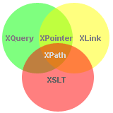

XLink 定义在 XML 文档中创建超级链接的标准方法。
XPointer 允许这些超级链接指向 XML 文档中的更多具体部分（片断）。
XLink 和 XPointer 简介
本章阐述 XLink 和 XPointer 的概念。
XLink 和 XPointer 语法
XLink 和 XPointer 的语法。
XLink 实例
一个在 XML 文档中使用 XLink 的实例。
XPointer 实例
一个在 XML 文档中使用 XLink 和 XPointer 的实例。
XLink 总结
本文包括在本教程所学内容的一个总结，以及我们向你推荐的下一步应该学习的内容。
XLink 参考手册
XLink 属性参考手册.
XLink 定义了一套标准的在 XML 文档中创建超级链接的方法。
XPointer 使超级链接可以指向 XML 文档中更多具体的部分（片断）。
学习本教程前您应当具备的基础知识:
如果您希望首先学习这些项目，请在我们对 首页 访问这些教程。首页.
 |
|
|
在2001年6月27日，XLink 被确立为 W3C 推荐标准。
XPointer 于2003年3月25日成为 W3C 推荐标准。
您可以在我们的《W3C 教程》中阅读更多有关 XML 标准的内容。
浏览器只在最小限度内支持 XLink 和 XPointer。
在 Mozilla 0.98+、Netscape 6.02+ 以及 Internet Explorer 6.0 中，均具有对 XLink 某种程度的支持。更早版本的浏览器根本不支持 XLink。
在 HTML 中，我们知道 <a> 元素可定义超级链接。不过 XML 不是这样工作的。在 XML 文档中，您可以使用任何你需要的名称 - 因此对于浏览器来说是无法预知在 XML 文档中可调用何种超级链接元素。
在 XML 文档中定义超级链接的方法是在元素上放置可用作超级链接的标记。
下面是在 XML 文档中使用 XLink 来创建链接的简单实例：
<?xml version="1.0"?>为了访问 XLink 的属性和特性，我们必须在文档的顶端声明 XLink 命名空间。
XLink 的命名空间是："http://www.w3.org/1999/xlink"。
<homepage> 元素中的 xlink:type 和 xlink:href 属性定义了来自 XLink 命名空间的 type 和 href 属性。
xlink:type="simple" 可创建一个简单的两端链接（意思是"从这里到哪里"）。稍后我们会研究多端链接（多方向）。
在 HTML 中，我们可创建一个既指向某个 HTML 页面又指向 HTML 页面内某个书签的超级链接（使用#）。
有时，可指向更多具体的内容会更有好处。举例，我们需要指向某个特定的列表的第三个项目，或者指向第五段的第二行。通过 XPointer 是很容易做到的。
假如超级链接指向某个 XML 文档，我们可以在 xlink:href 属性中把 XPointer 部分添加到 URL 后面，这样就可以导航（通过 XPath 表达式）到文档中某个具体的位置了。
举例，在下面的例子中，我们通过唯一的 id "rock" 使用 XPointer 指向某个列表中的第五个项目。
href="http://www.example.com/cdlist.xml#id('rock').child(5,item)"让我们通过研究一个实例来学习一些基础的 XLink 语法。
请看下面的 XML 文档，"bookstore.xml"，它用来呈现书籍：
<?xml version="1.0" encoding="ISO-8859-1"?>在您的浏览器查看 "bookstore.xml" bookstore.xml文件。
在上面的例子中，XLink 文档命名空间(xmlns:xlink="http://www.w3.org/1999/xlink")被声明于文档的顶部。 这意味着文档可访问 XLink 的属性和特性。
xlink:type="simple" 可创建简单的类似 HTML 的链接。您也可以规定更多的复杂的链接（多方向链接），但是目前，我们仅使用简易链接。
xlink:href 属性规定了要链接的 URL，而 xlink:show 属性规定了在何处打开链接。xlink:show="new" 意味着链接（在此例中，是一幅图像）会在新窗口打开。
在上面的例子中，我们只展示了简单的链接。当我们要访问远程位置的资源，而不是独立的页面时，XLink是变得更有趣。在上面的例子<description>元素集的XLINK属性显示的值为："new"。这意味着，应该在新窗口打开链接。我们可以设置XLINK中的值：显示属性"embed"。这意味着资源应嵌入到页面处理。你认为这可能是另一个XML文档，而不是只是一个图像，你可以建立一个XML文档中层次结构的例子。
使用XLink，你还可以指定资源时才显示。这是由XLink的actuate属性处理。XLINK：actuate"="onLoad"指定的资源文件应加载和显示。XLINK：actuate="onRequest"意味着链接被点击之前无法读取或显示资源。这对低带宽设置非常方便。
让我们通过研究一个实例来学习一些基础的 XPointer 语法。
在本例中，我们会为您展示如何使用 XPointer 并结合 XLink 来指向另外一个文档的某个具体的部分。
我们将通过研究目标 XML 文档开始（即我们要链接的那个文档）。
目标XML文档名为 "dogbreeds.xml"，它列出了一些不同的狗种类：
<?xml version="1.0" encoding="ISO-8859-1"?>在您的浏览器查看 "dogbreeds.xml" 文件。
注意上面的 XML 文档在每个我们需要链接的元素上使用了 id 属性！
不止能够链接到整个文档（当使用 XLink 时），XPointer 允许您链接到文档的特定部分。如需链接到页面的某个具体的部分，请在 xlink:href 属性中的 URL 后添加一个井号 (#) 以及一个 XPointer 表达式。
表达式：#xpointer(id("Rottweiler")) 可引用目标文档中 id 值为 "Rottweiler" 的元素。
因此，xlink:href 属性会类似这样：xlink:href="http://dog.com/dogbreeds.xml#xpointer(id('Rottweiler'))"
不过，当使用 id 链接到某个元素时，XPointer 允许简写形式。您可以直接使用 id 的值，就像这样：xlink:href="http://dog.com/dogbreeds.xml#Rottweiler"。
下面的 XML 文档可引用每条狗的品种信息，均通过 XLink 和 XPointer 来引用：
<?xml version="1.0" encoding="ISO-8859-1"?>本教程已经向您讲解了在 XML 文档中创建超级链接的一种标准方法。
您已经明白了 XML 中的链接被分为两个部分：XLink 和 XPointer。
XLink 定义了一套在 XML 文档中创建超级链接的标准方法。XPointer 使超级链接有能力指向 XML 文档中更多具体的部分（片断）。
如需更多有关 XLink 的知识，请浏览我们的《XLink 参考手册》。
下一步应当学习 XQuery。
XQuery
XQuery 和 XML 查询有关。
XQuery 被设计用来查询任何可以 XML 形态呈现的数据，包括数据库。
如果您希望学习更多有关 XQuery 的知识，请访问我们的《XQuery 教程》。
XLink，即 XML 链接语言，是一种通过 W3C 推荐标准认证的 XML 标记语言，提供一些方法，用于在 XML 文件上创建内部和外部链接，以及与这些链接相关联的元数据。
XLink 提供两种可在 XML 文档中使用的超链接，简单链接和扩展链接。简单链接，只连接两种资源，类似于 HTML 链接和 IMG 链接。 扩展链接，可连接任意数量的资源。
| 属性 | 值 | 描述 |
|---|---|---|
| xlink:actuate |
|
定义何时读取和显示被链接的资源。 |
| xlink:href | URL | 要链接的 URL。 |
| xlink:show |
|
在何处打开链接。Replace 是默认值。 |
| xlink:type |
|
链接的类型。 |